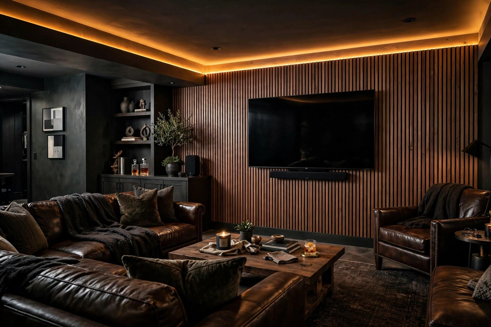

Kitchener, Waterloo, Cambridge — from wartime semis to tech-corridor family homes, Renofy brings fixed-quote, warranty-backed renovations to Waterloo Region.
Waterloo Region's homes tell its history: Kitchener's hardworking semis and detached, Waterloo's mix of university-area investments and established family streets, and Cambridge — Galt, Preston, Hespeler — with some of Ontario's most charming older stone and brick stock.
Whether it's a forever-home kitchen in Beechwood or a rental-ready bathroom near the universities, the process is the same: obsessive scoping, a fixed written quote, and craftsmanship backed for a year.

Semis and detached opened up for modern family life — islands, pantries, and stone that stands up to real cooking.
Spa-like ensuites for family homes and durable, beautiful updates for investment properties.
From Galt's older homes to Preston's family streets — guest suites, lounges, and home offices.
Semis to detached — kitchens, baths, and full main floors.
Family homes and university-area investment properties.
Galt, Preston, Hespeler — older stock handled with care.
The one that treats your budget like their own: fixed quote in writing, no surprise change orders, and a 1-year warranty. Compare our process and reviews against anyone in KW.
Yes — durable, attractive kitchens and bathrooms that photograph well, rent fast, and survive tenants. Fixed timelines matter to investors, and we put ours in writing.
Most basement projects run six to ten weeks depending on bathrooms, kitchens, and egress work. You'll have the full schedule before we start.
Tell us about the room you're tired of. We'll bring the ideas, the timeline, and the fixed price.